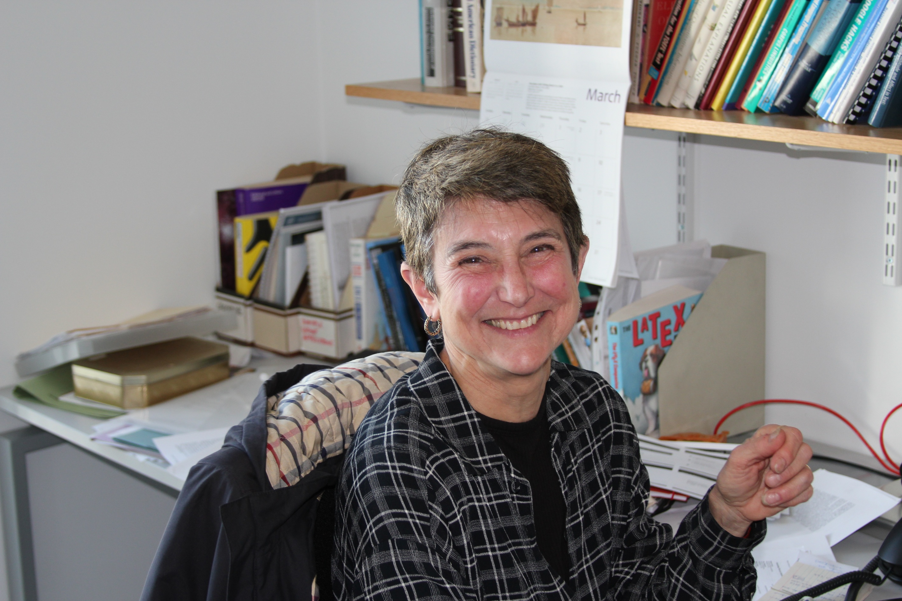

Invited talks at ALTA 2013
We are pleased to announce that Bonnie Webber and Mark Steedman will give invited talks.
Mark Steedman

Robust Computational Semantics
Practical tasks like question answering and machine translational ultimately require computing meaning representations that support inference. Standard linguistic accounts of meaning are impracticable for such purposes, both because they assume non-monotonic operations such as quantifier movement, and because they lack a representation for the meaning of content words that supports efficient computation of entailment. I'll discuss practical solutions to some of these problems within a near-context free grammar formalism for a working wide-coverage parser, in current work with Mike Lewis, and show how these solutions can be usefully applied in NLP tasks.
Mark Steedman is Professor of Cognitive Science in the School of Informatics at the University of Edinburgh, where he moved in 1998 from the University of Pennsylvania, after teaching for many years as Professor in the Department of Computer and Information Science. He is a Fellow of the British Academy, the Royal Society of Edinburgh, the American Association for Artificial Intelligence (AAAI), the Association for Computational Linguistics (ACL), and the Cognitive Science Society (CSS), and a Member of the European Academy.
His research covers a range of problems in computational linguistics, natural language processing, artificial intelligence, computer science, and cognitive science, including syntax and semantics of natural language, and parsing and interpretation of natural language discourse, including spoken intonation, by humans and by machine. Much of his current research uses Combinatory Categorial Grammar (CCG) as a formalism to address problems in wide-coverage parsing for robust semantic interpretation and natural language inference, and the problem of inducing and generalizing statistical parsers from data and grounded meaning representations, including those arising in robotics domains, and in child language acquisition. Some of his research concerns the analysis of music using similar statistical methods.
Bonnie Webber
Concurrent Discourse Relations
The Penn Discourse Treebank (PDTB) was released to the public in 2008 and remains the largest corpus of manually annotated discourse relations -- both relations that are signaled explicitly (e.g., by a coordinating or subordinating conjunction, or by a discourse adverbial or other construction) and ones that otherwise appear implicit.
The Penn Discourse TreeBank also diverges from other discourse-annotated corpora in permitting more than one discourse relation to be annotated as holding concurrently. Annotators could indicate this by assigning multiple sense labels to an explicit connective. Or, in those cases where adjacent sentences had no explicit connective, annotators could indicate concurrent discourse relations by either annotating a single implicit connective that concurrently conveyed multiple senses or annotating multiple implicit connectives, each conveying one of the concurrent relation(s). Subsequent experiments carried out using Mechanical Turk showed that, when a discourse adverbial explicitly signalled a discourse relation, there was often a separate concurrent relation that could be associated with an implicit coordinating or subordinating conjunction.
There are different circumstances in which different sets of concurrent discourse relations are taken to hold. I will go through these, and conclude with what I take the implications of this to be for various language technologies, including statistical machine translation.
Bonnie Webber is a Professor in the School of Informatics, at the the University of Edinburgh. She moved there from the University of Pennsylvania in Philadelphia, with which she continues to maintain strong and frequent contact.
Known for her work on discourse anaphora and discourse connectives, she has served as President of the Association for Computational Linguistics (ACL); co-editor (with Annie Zaenen and Martha Palmer) of the electronic journal, "Linguistic Issues in Language Technology", and co-developer (with Aravind Joshi, Rashmi Prasad, Alan Lee and Eleni Miltsakaki) of the Penn Discourse TreeBank.
She is a Fellow of the American Association for Artificial Intelligence, the Royal Society of Edinburgh, and the Association for Computational Linguistics. In the past few years, she and her group have focussed on how computational understanding of discourse structure and aspects of discourse coherence can be applied to improving the quality and accuracy of Statistical Machine Translation.